ShanghaiTech University
Yujiao Shi Assistant Professor
I am an Assistant Professor at ShanghaiTech University. Previously, I was a research fellow and completed my Ph.D. at the Australian National University, supervised by Prof. Hongdong Li.
My research focuses on 3D spatial intelligence across altitudes : connecting satellite, aerial, and ground-level observations to localize cameras, reconstruct scenes, and generate coherent views of the world.
Research
From cross-view localization to 3D vision across altitudes
How can we connect what is seen from space, from the air, and on the ground into a coherent understanding of the world? This question connects my work on visual localization, 3D reconstruction, and scene generation.
My earlier research established a focus on ground-to-satellite camera localization, progressing from city-scale retrieval to fine-grained pose estimation, and from fully supervised learning to weak supervision. Alongside localization, I have explored satellite-to-ground image synthesis, linking geometric reasoning with visual generation.
01 3D vision across altitudes Connecting satellite, drone, and ground imagery for joint camera localization and 3D reconstruction, with an emphasis on geometric consistency and learning with limited supervision.
02 Panoramic vision Learning geometry and scene representations from 360° imagery for camera pose estimation, feed-forward reconstruction, and novel view synthesis.
03 World models from aerial perspectives Exploring how aerial observations can ground spatially coherent, navigable world models. This ongoing direction builds on my work in cross-view generation and large-scale 3D scene modeling.
Work with me I welcome motivated students and researchers interested in cross-view localization, 3D vision across altitudes, panoramic vision, and aerial world models. Undergraduate and master's students, research assistants, visiting students, and postdoctoral researchers are welcome to get in touch with a CV and a short description of their research interests.
News
2026 Area Chair service: NeurIPS 2024–2026, CVPR 2026, ICLR 2027, and 3DV 2027. 2026 Cross-View Yaw Estimation at ECCV 2026 (Award Candidate) . Congrats, Taeho!2026 Cross3R at NeurIPS 2026 . Congrats, Qiwei and Zhongyao!2026 VGA , PanoVGGT , and AffordGrasp at CVPR 2026 . Congrats, Tao Jun, Yijing, and Xiaofei!2026 CylinderSplat and SatDreamer360 at ICLR 2026 . Congrats, Qiwei and Xianghui!2025 BevSplat at NeurIPS 2025 (Spotlight) ; GeoDistill at ICCV 2025; CityGo at SIGGRAPH Asia 2025. Congrats, Qiwei, Shaowen, and Weihang!
Earlier news
09/2025: One paper is accepted by NeurIPS 2025 (spotlight), Congratulations Qiwei, a first-year master student!
08/2025: One paper is accepted at Siggraph Asia 2025
07/2025: One paper is accepted by ICCV 2025, Congratulations Shaowen, a first-year master student!
04/2025: Our ICCV 2025 workshop: "From Street to Space: 3D Vision Across Altitudes" . Check our workshop webpage here .
01/2025: One paper is accepted by ICLR 2025, congrats Xianghui!
11/2024: Two papers are accepted by 3DV 2025
07/2024: One paper is accepted by Siggraph Asia 2024
07/2024: Two papers are accepted by ECCV 2024
04/2024: Our workshop proposal "UAVs in Multimedia" is accepted by ACM MM 2024
02/2024: I am serving as a co-organizer for Women in Computer Vision Workshop at ECCV 2024
01/2024: One paper accepted by ICRA 2024
10/2023: Co-organizer of workshop "UAVs in Multimedia" at ACM MM 2023
09/2023: One paper accepted by NeurIPS 2023
06/2023: One paper accepted by IROS 2023
06/2023: Tutorial speaker on cross-modal camera localization at CVPR 2023
Selected publications 2026 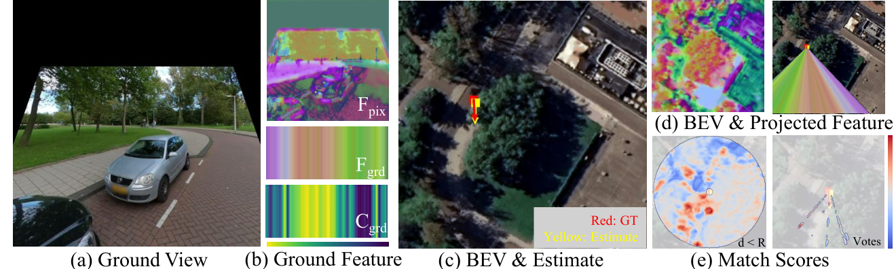
ECCV · 2026 · Award Candidate
Cross-View Yaw Estimation in Location Uncertainty with Line-Aligning Yaw Scoring Taeho Kang, Nairan Zhang, Yelin Kim, Yujiao Shi , Youngki Lee
Paper
Estimating camera orientation across ground and aerial views under location uncertainty.
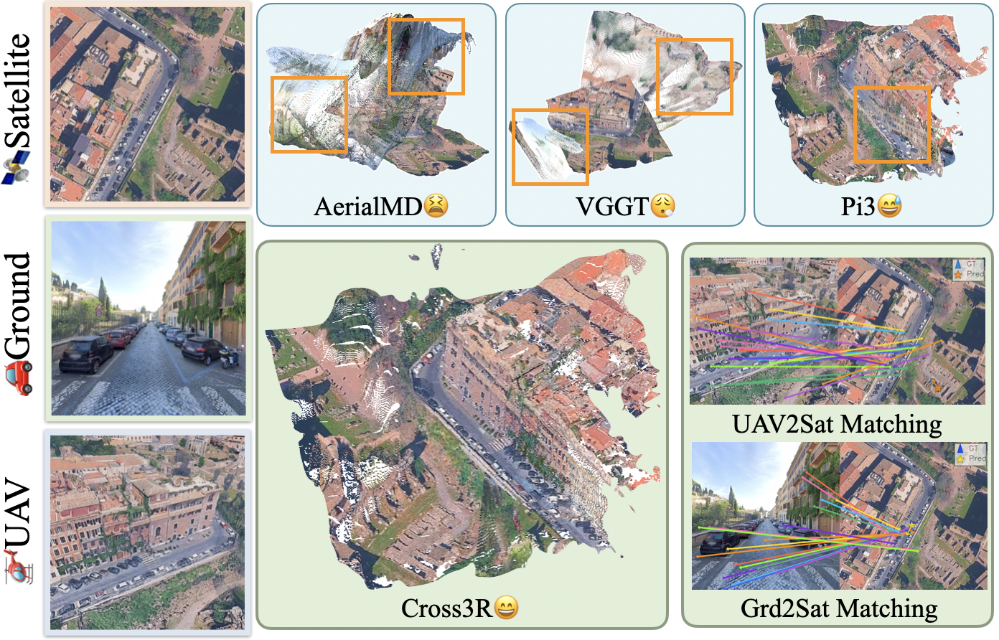
NeurIPS · 2026
Seeing Across Skies and Streets: Feedforward 3D Reconstruction from Satellite, Drone, and Ground Images Qiwei Wang, Zhongyao Tuo, Xianghui Ze, Yujiao Shi *
Paper
Cross3R connects satellite, drone, and ground observations through joint 3D reconstruction and camera pose estimation.
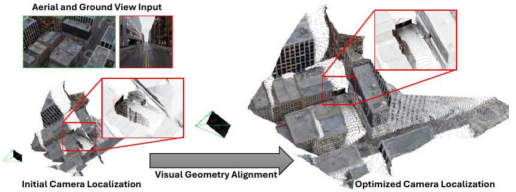
CVPR · 2026
VGA: Empowering Aerial-Ground Localization by Visual Geometry Alignment Tao Jun Lin, Yujiao Shi , Hongdong Li
Paper
CVPR · 2026
PanoVGGT: Feed-Forward 3D Reconstruction from Panoramic Imagery Yijing Guo, Mengjun Chao, Luo Wang, Tianyang Zhao, Haizhao Dai, Yingliang Zhang, Jingyi Yu, Yujiao Shi *
Paper · Code & data
Joint camera pose, depth, and point-cloud prediction from 360° imagery, with the PanoCity dataset.
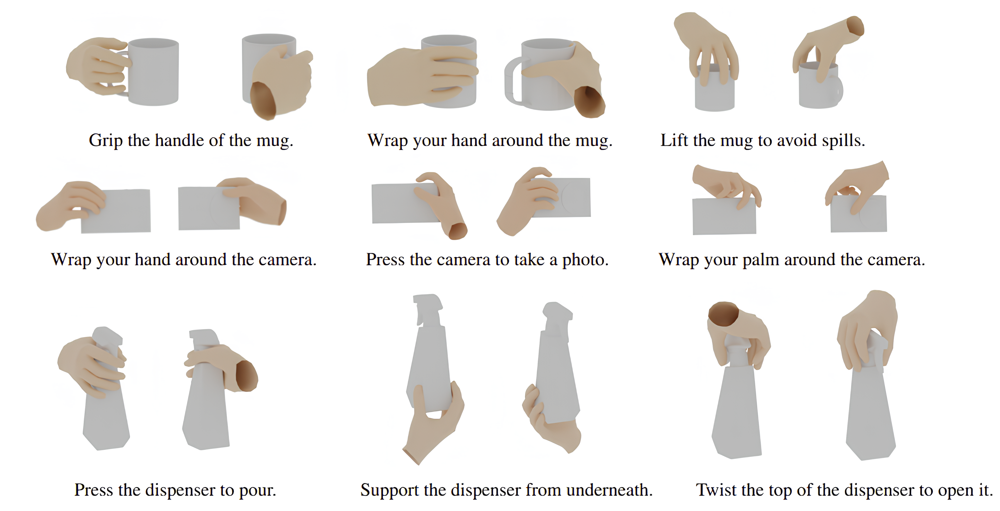
CVPR · 2026
AffordGrasp: Cross-Modal Diffusion for Affordance-Aware Grasp Synthesis Xiaofei Wu, Yi Zhang, Yumeng Liu, Yuexin Ma, Yujiao Shi , Xuming He
Paper
Generating human grasps conditioned on object geometry and interaction instructions.
ICLR · 2026
CylinderSplat: 3D Gaussian Splatting with Cylindrical Triplanes for Panoramic Novel View Synthesis Qiwei Wang, Xianghui Ze, Jingyi Yu, Yujiao Shi *
Paper · Code
A panoramic scene representation for novel view synthesis from single or sparse input panoramas.
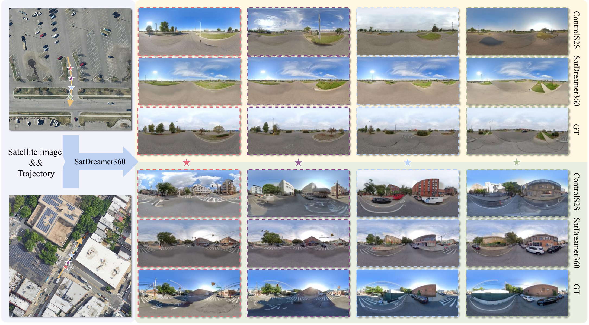
ICLR · 2026
SatDreamer360: Multiview-Consistent Generation of Ground-Level Scenes from Satellite Imagery Xianghui Ze, Beiyi Zhu, Zhenbo Song, Jianfeng Lu, Yujiao Shi *
Paper
Generating geometrically consistent ground-level panoramas from a satellite image and a camera trajectory.
2025 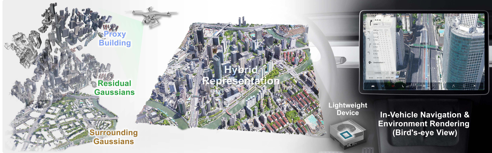
SIGGRAPH Asia · 2025
CityGo: Lightweight Urban Modeling and Rendering with Proxy Buildings and Residual Gaussians Weihang Liu, Yuhui Zhong, Yuke Li, Xi Chen, Jiadi Cui, Honglong Zhang, Lan Xu, Xin Lou, Yujiao Shi , Jingyi Yu, Yingliang Zhang
Paper · Project
Combining building geometry and Gaussian primitives for efficient urban scene rendering.
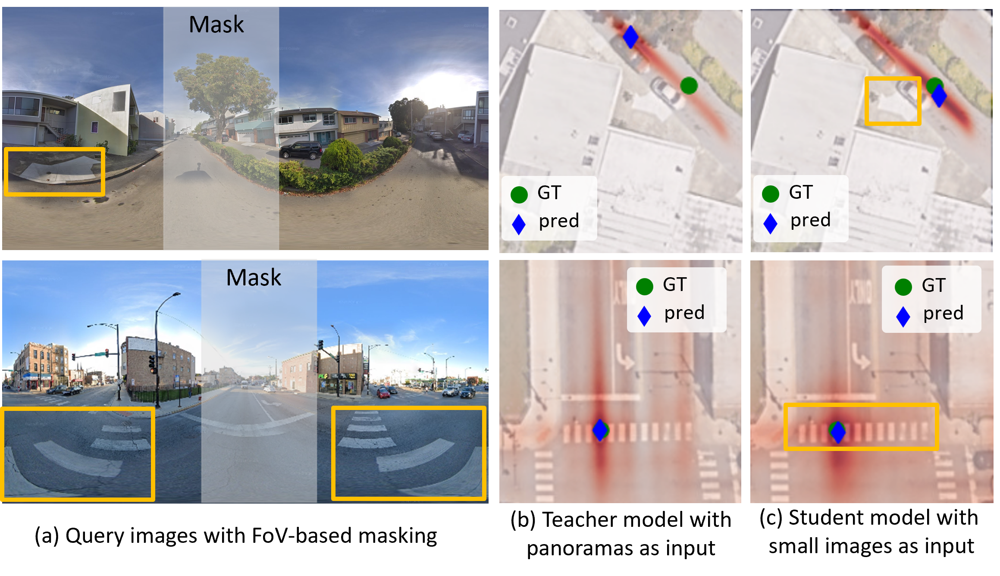
ICCV · 2025
GeoDistill: Geometry-Guided Self-Distillation for Weakly Supervised Cross-View Localization Shaowen Tong, Zimin Xia, Alexandre Alahi, Xuming He, Yujiao Shi *
Paper · Code
Learning cross-view localization with coarse supervision through geometry-guided self-distillation.
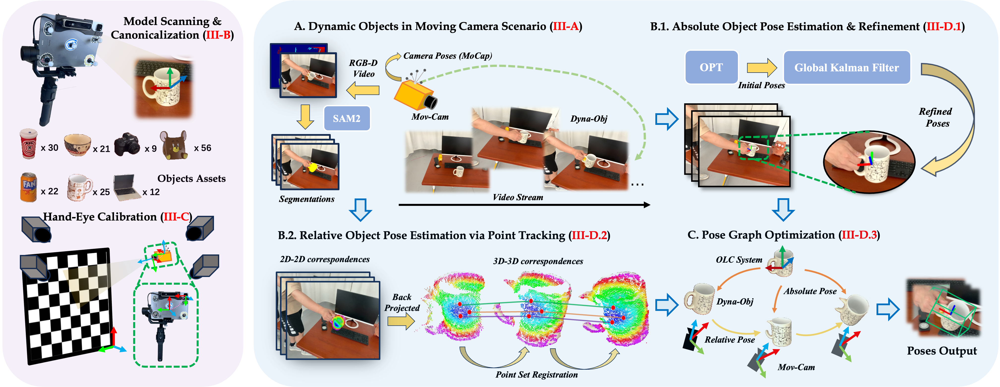
IEEE Robotics and Automation Letters · 2025
DynOPETs: A Versatile Benchmark for Dynamic Object Pose Estimation and Tracking in Moving Camera Scenarios Xiangting Meng, Jiaqi Yang, Mingshu Chen, Chenxin Yan, Yujiao Shi , Wenchao Ding, Laurent Kneip
Paper · Project
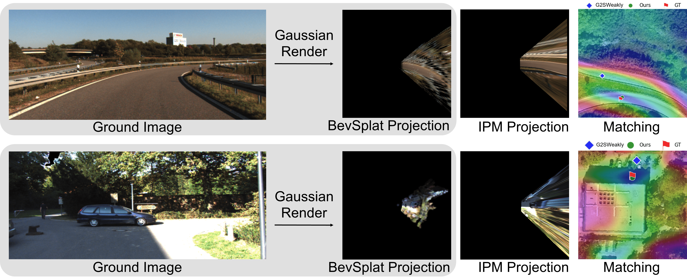
NeurIPS · 2025 · Spotlight
BevSplat: Resolving Height Ambiguity via Feature-Based Gaussian Primitives for Weakly-Supervised Cross-View Localization Qiwei Wang, Shaoxun Wu, and Yujiao Shi *
Paper
ICLR, 2025
Controllable Satellite-to-Street-View Synthesis with Precise Pose Alignment and Zero-Shot Environmental Control Xianghui Ze, Zhenbo Song, Qiwei Wang, Jianfeng Lu, and Yujiao Shi *
Paper
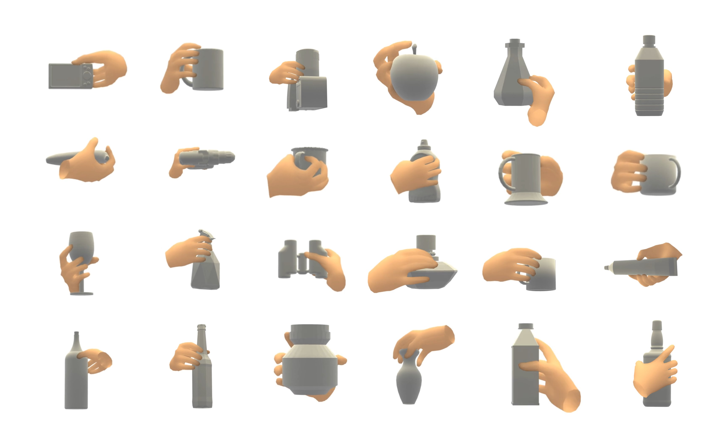
3DV, 2025
FastGrasp: Efficient Grasp Synthesis with Diffusion Xiaofei Wu, Tao Liu, Caoji Li, Yuexin Ma, Yujiao Shi *, and Xuming He*
Code & paper
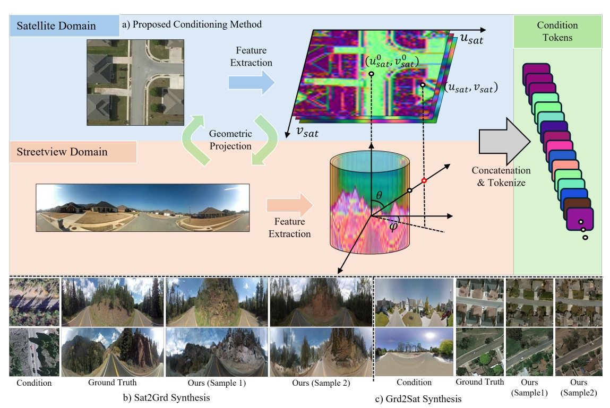
3DV · 2025
Geometry-guided Cross-view Diffusion for One-to-many Cross-view Image Synthesis Tao Jun Lin, Wenqing Wang, Yujiao Shi , Akhil Perincherry, Ankit Vora, and Hongdong Li
Paper
Earlier publications (2024 and before) 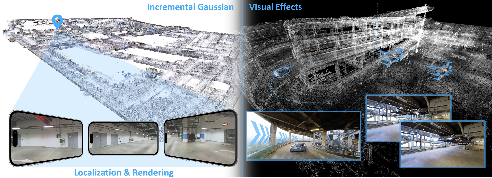
ACM Transactions on Graphics · 2024
LetsGo: Large-Scale Garage Modeling and Rendering via LiDAR-Assisted Gaussian Primitives Jiadi Cui, Junming Cao, Fuqiang Zhao, Zhipeng He, Yifan Chen, Yuhui Zhong, Lan Xu, Yujiao Shi *, Yingliang Zhang *, Jingyi Yu *
Paper
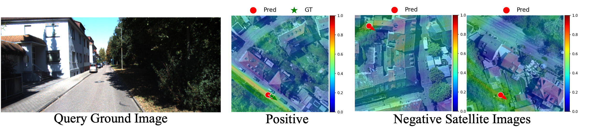
ECCV · 2024
Weakly-supervised camera localization by ground-to-satellite image registration Yujiao Shi , Hongdong Li, Akhil Perincherry, Ankit Vora
Paper
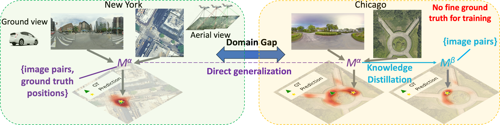
ECCV · 2024
Adapting fine-grained cross-view localization to areas without fine ground truth Zimin Xia, Yujiao Shi , Hongdong Li, and Julian FP Kooij
Paper
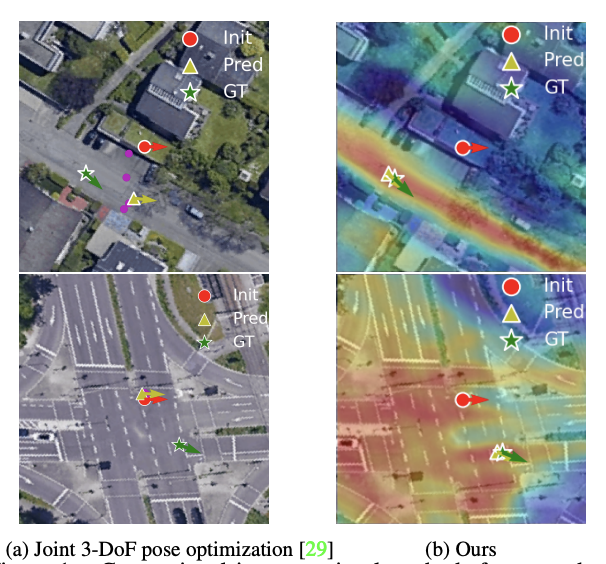
ICCV, 2023
Boosting 3-DoF Ground-to-Satellite Camera Localization Accuracy via Geometry-Guided Cross-View Transformer Yujiao Shi , Fei Wu, Akhil Perincherry, Ankit Vora, and Hongdong Li
Paper · paper · code
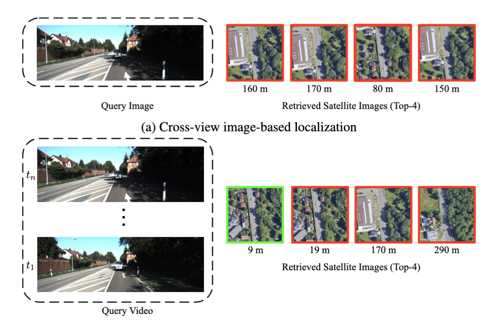
ACCV, 2022
CVLNet: Cross-View Feature Correspondence Learning for Video-based Camera Localization Yujiao Shi , Xin Yu, Shan Wang, and Hongdong Li
Paper · code
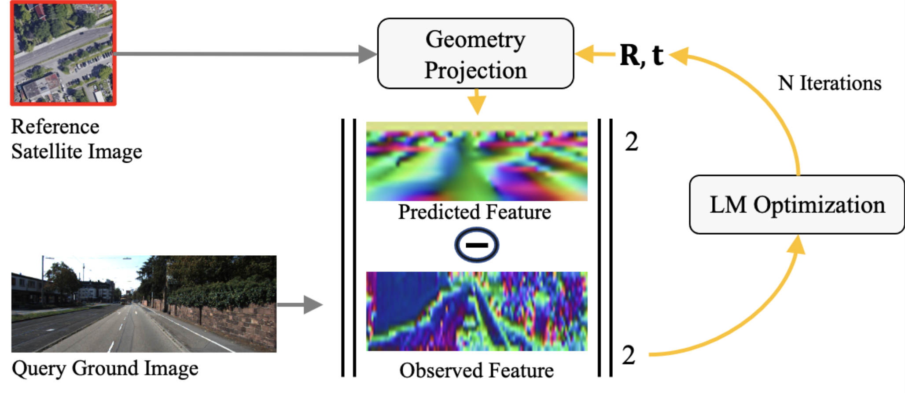
CVPR, 2022
Beyond Cross-view Image Retrieval: Highly Accurate Vehicle Localization Using Satellite Image Yujiao Shi , Hongdong Li
Paper · code
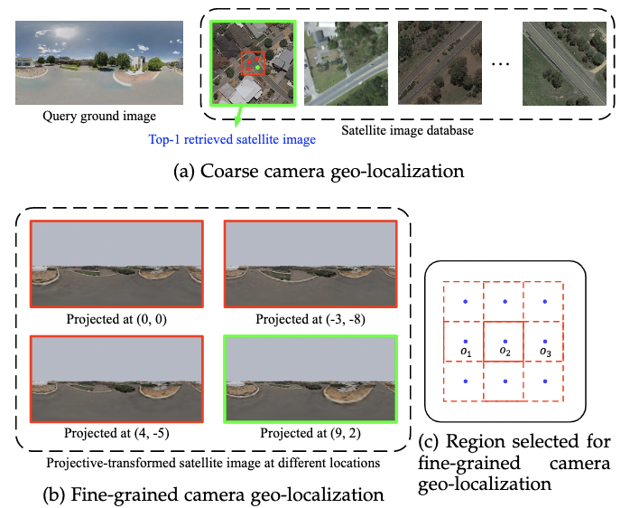
TPAMI, 2022
Accurate 3-DoF Camera Geo-Localization via Ground-to-Satellite Image Matching Yujiao Shi , Xin Yu, Liu Liu, Dylan Campbell, Piotr Koniusz, and Hongdong Li
Paper · code
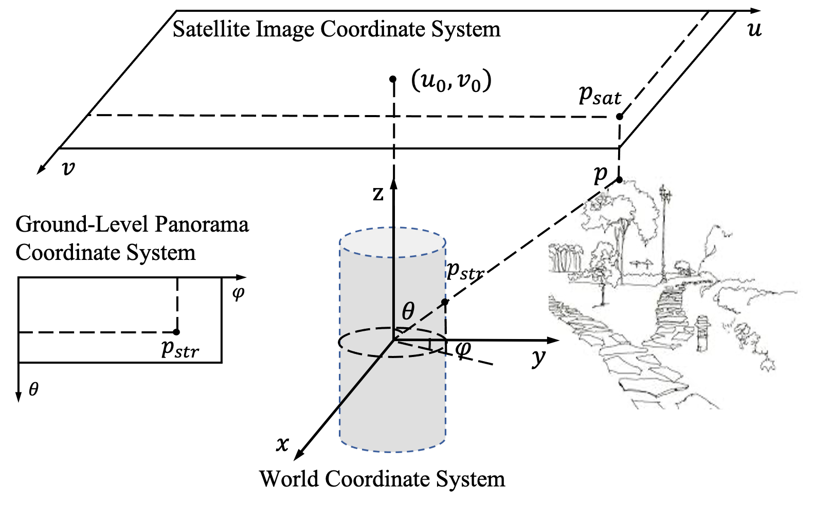
TPAMI, 2022
Geometry-Guided Street-View Panorama Synthesis from Satellite Imagery Yujiao Shi , Dylan Campbell, Xin Yu, and Hongdong Li
Paper · code
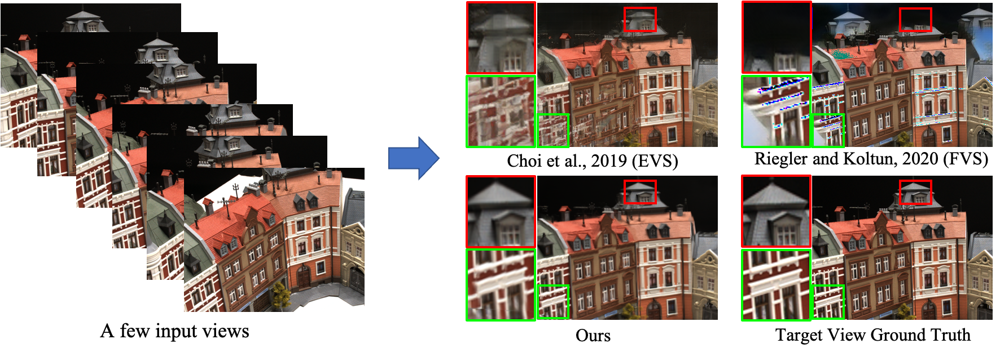
CVPR, 2021
Self-Supervised Visibility Learning for Novel View Synthesis Yujiao Shi , Hongdong Li, and Xin Yu
Paper · code
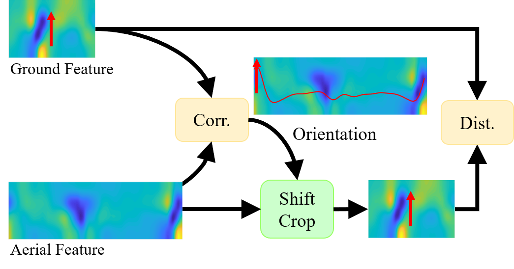
CVPR, 2020
Where am I looking at? Joint Location and Orientation Estimation by Cross-View Matching Yujiao Shi , Xin Yu, Dylan Campbell, and Hongdong Li
Paper · code
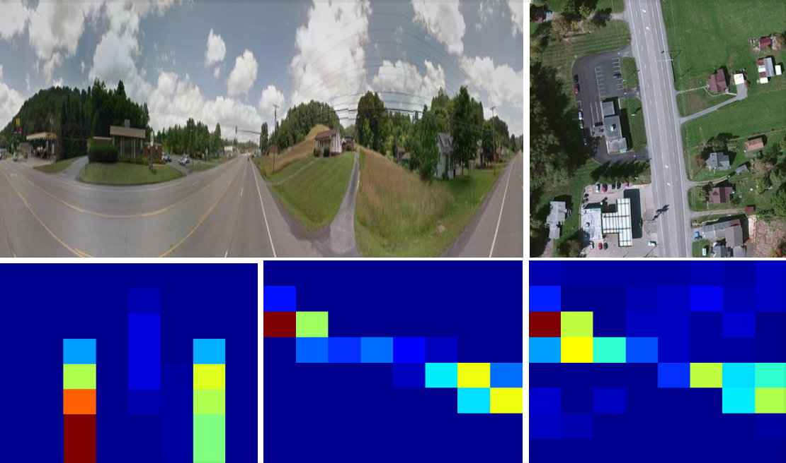
AAAI, 2020
Optimal Feature Transport for Cross-View Image Geo-Localization Yujiao Shi , Xin Yu, Liu Liu, Tong Zhang, and Hongdong Li
Paper · code
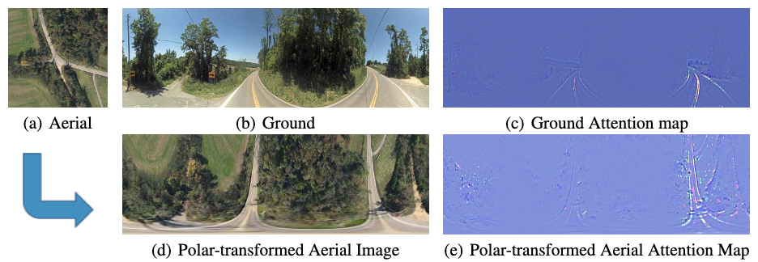
NeurIPS, 2019
Spatial-Aware Feature Aggregation for Cross-View Image based Geo-Localization Yujiao Shi , Liu Liu, Xin Yu, and Hongdong Li
Paper · code
Academic service
Area Chair NeurIPS 2024–2026 · CVPR 2026 · ICLR 2027 (upcoming) · 3DV 2027 (upcoming)
Workshops From Street to Space: 3D Vision Across Altitudes , ICCV 2025.Recognition Outstanding Reviewer: CVPR 2021, NeurIPS 2023, CVPR 2024.